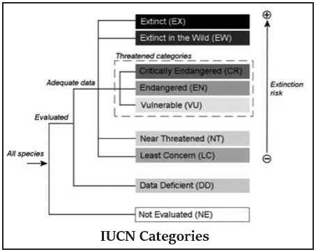
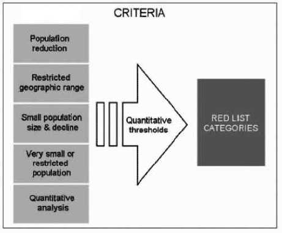

Biodiversity found on Earth today consists of many millions of distinct biological species, the product of four billion years of evolution. Biodiversity is the variety of life on Earth, it includes all organisms, species, and populations; the genetic variation among these; and their complex assemblages of communities and ecosystems. It also refers to the interrelatedness of genes, species, and ecosystems and in turn, their interactions with the environment.
This is life, This is Biodiversity.
Biodiversity is defined as ‘the variability among living organisms from all sources, including terrestrial, marine and other aquatic ecosystems and the ecological complexes of which they are a part; this includes diversity within species, between species and of ecosystems’.
- United Nations Earth Summit (1992)
Do you know?
Sea snakes are very poisonous. The most poisonous one is the Beaded Sea Snake. Just 3 drops of venom can kill about 8 people! Their other methods of defense include to spray a stinky, musky liquid or to poop. Eew!
Conservation and sustainable use of biodiversity is fundamental to ecologically sustainable development. Biodiversity is part of our daily lives and livelihood, and constitutes resources upon which families, communities, nations and future generations depend.
Biodiversity is considered to exist at three levels: genetics, species, and ecosystems.
• It is concerned with the variation in genes within a particular species.
• Genetic diversity allows species to adapt to changing environments.
• This diversity aims to ensure that some species survive drastic changes and thus carry on desirable genes.
• The survival of individuals ensures the survival of the population.
• The genetic diversity gives us beautiful butterflies, roses, parakeets or coral in a myriad hues, shapes and sizes.
(b) Species diversity:
• It refers to the variety of living organisms on earth.
• Species differ from one another, markedly in their genetic makeup, do not inter-breed in nature.
• Closely-related species however have in common much of their hereditary characteristics. For instance, about 98.4 per cent of the genes of humans and chimpanzees are the same.
• It is the ratio of one species population over total number of organisms across all species in the given biome.
• ‘Zero’ would be infinite diversity, and ‘one’ represents only one species present.
(c) Ecosystem/ Community diversity:
• This refers to the different types of habitats. A habitat is the cumulative factor of the climate, vegetation and geography of a region.
• There are several kinds of habitats around the world. Corals, grasslands, wetland, desert, mangrove and tropical rain forests are examples of ecosystems.
• Change in climatic conditions is accompanied by a change in vegetation as well. Each species adapts itself to a particular kind of environment.
• As the environment changes, species best adapted to that environment becomes predominant. Thus the variety or diversity of species in the ecosystem is influenced by the nature of the ecosystem.
Do you know?
The most dangerous sharks are the Great White shark, the Tiger shark, the Hammerhead shark, the Mako shark and the Bull shark. On average, there are only about 100 shark attacks each year and only 10 of those result in a human death. People kill thousands of sharks in a year for sport and for food. Shark skins are used to make leather products. Until the 1950 s, shark livers were used as a vitamin A supplement. Shark fin soup and shark steaks are both eaten in many countries. So... who’s the dangerous predator?
Biodiversity is measured by two major components:
i. species richness, and
ii. species evenness.
(i) Species richness
It is the measure of number of species found in a community
a) Alpha diversity
It refers to the diversity within a particular area or ecosystem, and is usually expressed by the number of species (i.e., species richness) in that ecosystem.
b) Beta diversity
It is a comparison of diversity between ecosystems, usually measured as the change in amount of species between the ecosystems
c) Gamma diversity
It is a measure of the overall diversity for the different ecosystems within a region.
(ii) Species evenness
It measures the proportion of species at a given site, e.g. low evenness indicates that a few species dominate the site.
The building blocks of plants, animals and humans are identical, and are made of the four elements - carbon, oxygen, nitrogen and hydrogen.
These elements are present in the environment - in air, water and soil. However, only green plants can absorb nitrogen from the soil through their roots, and use sunlight and water to produce energy by a process called photosynthesis. They are known as producers.
Animals and humans, who have plants or other animals as their food, are known as consumers. The chain that links consumers to producers is called the food chain or web.
Every living creature is found in a food chain. There are several food chains and they can be complex or simple depending on the environment.
To cite some examples, grasshoppers eat grass and are in turn eaten by frogs; snakes eat frogs and rodents.
Thus the importance of each and every creature in the web of life is evident. Tampering with the food chain only produces negative results, leading to the destruction of the species.
Every time a species becomes extinct, the chain is broken and many species, including humans, move closer to extinction.
Biodiversity provides a number of natural services for human beings:
(a) Ecosystem services
• Protection of water resources
• Soils formation and protection
• Nutrient storage and recycling
• Pollution breakdown and absorption
• Contribution to climate stability
• Maintenance of ecosystems
• Recovery from unpredictable events
(b) Biological services
• Food
• Medicinal resources and pharmaceutical drugs
• Wood products
• Ornamental plants
• Breeding stocks
• Diversity in genes, species and ecosystems
• Research, education and monitoring
• Recreation and tourism
• Cultural values
Loss of biodiversity occurs when either a particular species is destroyed or the habitat essential for its survival is damaged. The latter is more common as habitat destruction is inevitable fallout of development.
The extinction of species takes place when they are exploited for economic gain or hunted as sport or for food. Extinction of species may also occur due to environmental reasons like ecological substitutions, biological factors and pathological causes which can be caused either by nature or man.
• floods,
• earthquakes,
• landslides,
• rivalry among species,
• lack of pollination and diseases.
• Habitat destruction
• Uncontrolled commercial exploitation
• Hunting & poaching
• Conversion of rich bio-diversity site for human settlement and industrial development
• Extension of agriculture
• Pollution
• Filling up of wetlands
• Destruction of coastal areas
Do you know?
Not all snakes have fangs. Only the poisonous ones do. Fangs are sharp, long, hollow teeth that are hooked up to small sacs in the snake’s head behind their eyes. These sacs produce a poisonous liquid called venom. When a snake bites, venom is released and starts to work immediately to kill or paralyze the prey.
Conservation of biological diversity leads to conservation of essential ecological diversity and preserve the continuity of food chains.
(a) Ex-situ conservation: Conserving biodiversity outside the areas where they naturally occur is known as exsitu conservation.
• Here, animals are reared or plants are cultivated like zoological parks or botanical gardens. Reintroduction of an animal or plant into the habitat from where it has become extinct is another form of ex situ conservation.
• For example, the Gangetic gharial has been reintroduced in the rivers of Uttar Pradesh, Madhya Pradesh and Rajasthan where it had become extinct.
• Seed banks, botanical, horticultural and recreational gardens are important centres for ex-situ conservation.
(b) In-situ conservation: Conserving the animals and plants in their natural habitats is known as in-situ conservation. The established natural habitats are:
• National parks
• Sanctuaries
• Biosphere reserves and
• Reserved forests
• Protected forests
• Low priority for conservation of living natural resources.
• Exploitation of living natural resources for monetary gain.
• Values and knowledge about the species and ecosystem are inadequate.
• Unplanned urbanization and uncontrolled industrialization.
Botanical garden refers to the scientifically planned collection of living trees, shrubs, herbs, climbers and other plants from various parts of the world.
1. To study the taxonomy as well as growth of plants.
2. To study the introduction and acclimatization process of exotic plants.
3. It acts as a germplasm collection.
4. It helps development of new hybrids.
5. It augments conserving rare and threatened species.
Zoo is an establishment, whether stationary or mobile, where captive animals are kept for exhibition to the public and includes a circus and rescue centers but does not include an establishment of a licensed dealer in captive animals - CZA .
The initial purpose of zoos was entertainment, over the decades, zoos have got transformed into centres for wildlife conservation and environmental education.
Apart from saving individual animals, zoos have a role to play in species conservation too (through captive breeding).

Do you know?
Two species of bear which have special feet are polar bear and the giant panda. The polar bear has partially webbed toes for swimming and walking on snow as well as furry bottoms to keep its feet warm on the ice. Giant pandas do not have a heel pad so they walk more on their toes.
Species judged as threatened are listed by various agencies as well as by some private organizations. The most cited of these lists is the Red Data Book.
It is a loose-leaf volume of information on the status of many kinds of species. This volume is continually updated and is issued by the International Union for Conservation of Nature (IUCN) located in Morges, Switzerland.
“Red” of course is symbolic of danger that the species both plants and animals presently experience throughout the globe.
The Red Data Book was first issued in 1966 by the IUCN’s Special Survival Commission as a guide for formulation, preservation and management of species listed.
In this Book, information for endangered mammals and birds are more extensive than for other groups of animals and plants, coverage is also given to less prominent organisms facing extinction.
The pink pages in this publication include the critically endangered species. As the status of the species changes, new pages are sent to the subscribers.
Green pages are used for those species that were formerly endangered, but have now recovered to a point where they are no longer threatened. With passing time, the number of pink pages continue to increase. There are pitifully few green pages.
A taxon is Extinct when there is no reasonable doubt that the last individual has died. A taxon is presumed Extinct when exhaustive surveys in known and/or expected habitat, at appropriate times (diurnal, seasonal, annual), throughout its historic range have failed to record an individual.
A taxon is Extinct in the Wild when it is known only to survive in cultivation, in captivity or as a naturalized population (or populations) well outside the past range. A taxon is presumed Extinct in the wild when exhaustive surveys in known and/or expected habitat, at appropriate times (diurnal, seasonal, annual), throughout its historic range have failed to record an individual.
A taxon is Critically Endangered when the best available evidence indicates that it meets any of the criteria for Critically Endangered.
• reduction in population (> 90% over the last 10 years),
• population size (number less than 50 mature individuals),
• quantitative analysis showing the probability of extinction in wild in at least 50% in their 10 years) and
• it is therefore considered to be facing an extremely high risk of extinction in the wild.
PIT VIPERS
The ‘pit’ is a special organ in between the eyes and the nostrils. The pit senses body heat from animals and gives the snake a ‘picture’ of that animal. The snake can then attack it. This helps these snakes to find prey in the dark.
Some pit vipers will bite and poison the prey and then release it. It will follow the dying animal, using its heat sensors, until it stops and the snake can swallow it. Most pit vipers hunt at night when the air is cooler and the heat from rodents and other prey is most obvious to them. All rattlesnakes are Pit Vipers.
A taxon is Endangered when the best available evidence indicates that it meets any of the criteria for Endangered.
• reduction in population size (70% over the last 10 years),
• population size estimated to number fewer than 250 mature individuals,
• quantitative analysis showing the probability of extinction in wild in at least 20% within 20 years and
• it is therefore considered to be facing a very high risk of extinction in the wild.
A taxon is Vulnerable when the best available evidence indicates that it meets any of the criteria for Vulnerable i.e.
• reduction in population (> 50% over the last 10 years)
• population size estimated to number fewer than 10,000 mature individuals,
• probability of extinction in wild is at least 10% within 100 years, and
• it is therefore considered to be facing a high risk of extinction in the wild.
A taxon is Near Threatened when it has been evaluated against the criteria but does not qualify for Critically Endangered, Endangered or Vulnerable now, but is close to qualifying for or is likely to qualify for a threatened category in the near future.
A taxon is Least Concern when it has been evaluated against the criteria and does not qualify for Critically Endangered, Endangered, Vulnerable or Near Threatened. Widespread and abundant taxa are included in this category.
A taxon is Data Deficient when there is inadequate information to make a direct, or indirect, assessment of its risk of extinction based on its distribution and/or population status. A taxon in this category may be well studied, and its biology well known, but appropriate data on abundance and/or distribution are lacking.
Data Deficient is therefore not a category of threat. Listing of taxa in this category indicates that more information is required and acknowledges the possibility that future research will show that threatened classification is appropriate.
A taxon is Not Evaluated when it is has not yet been evaluated against the criteria.